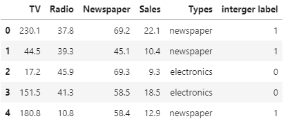
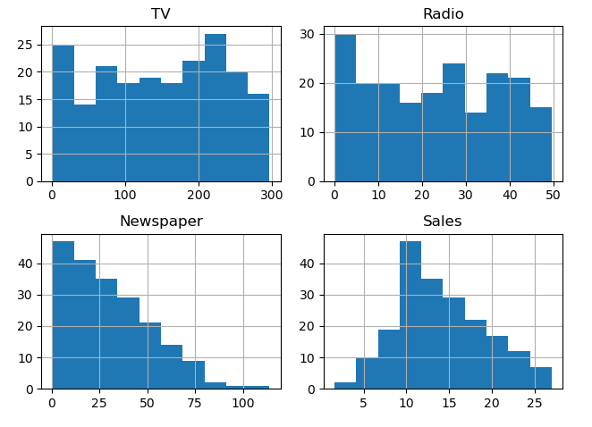
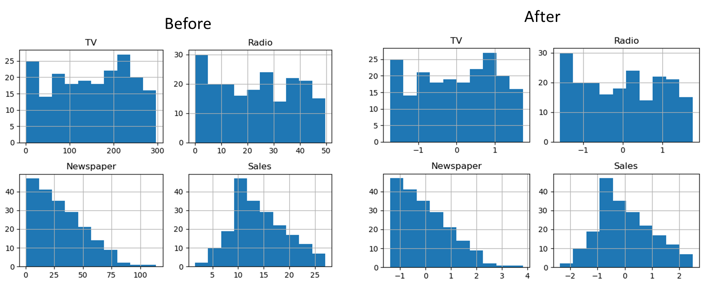

Data wrangling is the procedure of acquiring, analysing, and manipulating raw data into a suitable format for faster processing and evaluation.
Data wrangling can be divided into the following section:
from sklearn.preprocessing import LabelEncoder
label_encoder = LabelEncoder()
integer_encoded = label_encoder.fit_transform(df2["Types"])
df2["interger label"]=integer_encodedThe output of this code is as follows:

import matplotlib.pyplot as plt
df2[['TV', 'Radio', 'Newspaper', 'Sales']].hist()
plt.tight_layout()
plt.show()The output of this code is as follows:

Before scaling mean value of each feature
print("--------------------------")
print(df2[['TV', 'Radio', 'Newspaper', 'Sales']].mean())
print("STD:")
print("--------------------------")
print(df2[['TV', 'Radio', 'Newspaper', 'Sales']].std(ddof=0))
df3=df2.copy()
df3[['TV', 'Radio', 'Newspaper', 'Sales']]=(df3[['TV', 'Radio', 'Newspaper', 'Sales']]-df3[['TV', 'Radio', 'Newspaper', 'Sales']].mean())
/df3[['TV', 'Radio', 'Newspaper', 'Sales']].std(ddof=0)
print("--------------------------")
print(df3[['TV', 'Radio', 'Newspaper', 'Sales']].mean())
print("STD:")
print("--------------------------")
print(df3[['TV', 'Radio', 'Newspaper', 'Sales']].std(ddof=0))
df3[['TV', 'Radio', 'Newspaper', 'Sales']].hist()
plt.tight_layout()
plt.show()
